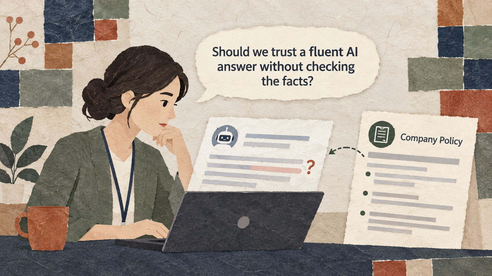

Situation
The problem
Business staff need useful AI-written communication, but fluent output can contain unsupported facts. They must know when to search, when to draft with AI, and what a person must verify.

3 Hours (180 minutes) - Hour 1 (50 min): Comprehensive Concept Lecture & Live Demonstration - Hour 2 (50 min): Guided Hands-On Lab (Basic Exercise: Customer Review Comparison) - Hour 3 (50 min): Applied Business Challenge & Peer Debrief (Advanced Exercise: Multi-Issue Escalation)
Business staff need useful AI-written communication, but fluent output can contain unsupported facts. They must know when to search, when to draft with AI, and what a person must verify.
Learn what ChatGPT can and cannot do, understand how it generates text, and build safety habits for daily office tasks.
Practice material: Use the practice material supplied in the session Markdown.
Do not replace missing information with guesses.
Business staff need useful AI-written communication, but fluent output can contain unsupported facts. They must know when to search, when to draft with AI, and what a person must verify.
Key explanations taken from the active session lesson.
Key explanations taken from the active session lesson.
These examples come from the current session scenario.
Write an apology email to an angry customer whose delivery was late.
Keep the source, task, constraints, and output check visible.
You are the Customer Support Lead for an online artisanal coffee subscription brand.
A long-time subscriber experienced a 4-day courier delay due to regional weather.
Write a 3-paragraph apology email following these rules:
1. Acknowledge and apologize for the shipping delay in the very first sentence.
2. Offer a $10 store credit code [COFFEE10] toward their next monthly renewal.
3. Explain our backup carrier routing policy in 2 concise bullet points.
4. Maintain an empathetic, professional tone and keep the total length under 150 words.Use the complete case and instructions from the session Markdown.
Use the complete case and instructions from the session Markdown.
Check the output before sharing or acting on it.